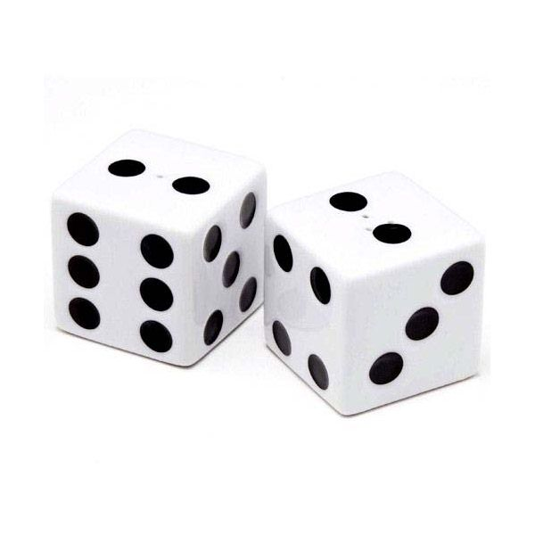
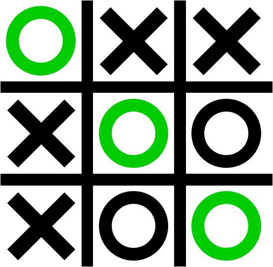

Primeiramente precisamos saber o que é um dado, um dado nada mais é que um valor básico. Como assim?
Pense em um número?
Pensou?
Tá pode esquecer ele agora.
#brinks
Nesse caso o número é um dado do tipo Number ou inteiro, dependendo da linguagem. Levando isso em consideração então podemos deduzir que palavras também são dados, correto?
Corretíssimo! E esse tipo de dado se chama String, prazer.
Especificamente no JavaScript temos os seguintes tipos de dados:
Com um adendo especial para o:
O valor null é um literal em JavaScript que representa um valor nulo ou "vazio" (p/ex: que aponta para um objeto inexistente).
O valor undefined representa um valor indefinido.
Basicamente a diferença entre eles é que o null é um tipo de objeto e o >undefined é um valor, podemos verificar isso analisando o código abaixo:
typeof null // object
typeof undefined // undefined
null === undefined // falso
null == undefined // verdadeiro
String é o tipo utilizado para armazenar textos. Uma das operações mais usadas nas strings é checar seu tamanho, para concatená-las usamos os operadores + e +=. Para checar pela existência ou posição de substrings usamos o método indexOf e para extrair substrings com o método substring.
Para criarmos uma String podemos simplesmente atribuir o valor diretamente na variável.
var palavra = "JS4Girls";
typeof palavra; // "string"
Agora criando ele com o construtor String.
var palavra = new String("JS4Girls");
typeof palavra; // "object"
Há duas maneiras de acessar um caráter individual em uma string. A primeira é o método charAt:
return 'cat'.charAt(1); // retorna "a"
A outra maneira (introduzido no ECMAScript 5) consiste em tratar a string como um objeto Array-like, onde os caráteres individuais correspondem a um índice numérico:
return 'cat'[1]; // retorna "a"
No JavaScript, basta usar o operador maior que e menor que:
var a = "a";
var b = "b";
if (a < b) // true
console.log(a + " é menor que " + b);
else if (a > b)
console.log(a + " é maior que " + b);
else
console.log(a + " e " + b + " são iguais.");
PENSAR EM UM EXERCICIO SEM IF
O tipo Number é utilizado, como vimos anteriormente, para armazenar números e para isso também temos duas formas diferentes de fazê-lo:
var numero = 420;
typeof numero; // "number"
Agora criando ele com o construtor Number.
var numero = new Number(420);
typeof numero; // "object"
Simples, só usar o operador maior que e menor que:
var a = 420;
var b = 666;
if (a < b) // true
console.log(a + " é menor que " + b);
else if (a > b)
console.log(a + " é maior que " + b);
else
console.log(a + " e " + b + " são iguais.");
Escreva um código que receberá o ano de nascimento via prompt e teste se é o usuário é maior de idade, caso sim mostre a mensagem: "Pode entrar". Caso não, mostre: "Entrada NEGADA!"
Ainda veremos no módulo de lógico o que um valor booleano significa, por hora basta saber que ele representa apenas dois valores possíveis:
E ele é a base da lógica booleana que aprenderemos a seguir. Para criarmos um valor desse tipo é bem simples.
var bool = false;
typeof bool; // "boolean"
Criando ele com o construtor Boolean.
var bool = new Boolean(false);
typeof bool; // "object"
O valor passado como primeiro parâmetro é convertido para um valor boleano, se necessário. Se o valor é omitido ou é 0, -0, null, false, NaN, undefined ou é uma string vazia(""), o objeto terá um valor inicial de false. Todos outros valores, inckuindo qualquer objeto ou string "false", criam um objeto com valor inicial true.
Não confunda os valores primitivos Boolean true e false com os valores true and false do objeto Boolean.
Qualquer objeto cujo o valor não é undefined ou null, incluindo um objeto Boolean que o valor seja false, é avaliado para true quando passa por uma declaração condicional. Por exemplo, a condição a seguir if a declaração é avaliada como true:
var x = new Boolean(false);
if (x) {
// this code is executed
}
Esse comportamento não se aplica aos primitivos Boolean. Por exemplo, a condição a seguir if a declaração é avaliada como false:
var x = false;
if (x) {
// this code is not executed
}
Caso você queira converter algum valor para booleano prefira fazer sem o contrutor new, como no código abaixo:
var x = Boolean(expression); // preferido
var x = new Boolean(expression); // não use
// Exemplo
var bool = Boolean("JS4Girls");
console.log(bool); // true
var bool = Boolean(0);
console.log(bool); // false
Escreva um código que receba uma variável numérica e teste esse valor se é verdadeiro, utilizando as 2 formas acima.
Array, ah esse Array!
Nunca esquecerei uma aula que tive no segundo ano do ensino médio e a aula de matemática era sobre Arrays.
Lembro ainda como se fosse hoje, perguntei ao professor:
- Professor mas onde que eu vou usar isso na vida?
Típica pergunta de aluno chato né? Então, olha a resposta do infeliz:
- Não sei.
Pois é, agora imagine se ele tivesse me perguntado o que eu iria fazer da minha vida, já que naquela época eu ja estava começando na programação, com 14 anos.
Agora sabendo disso espero que você dê muita atenção aos Arrays pois ele são a base das estruturas de dados utilizadas na programação, é praticamente impossível você programar sem utilizar algum tipo de Array.
Beleza, mas e o que são esses assustadores Arrays?
Imagine o Jogo da Velha.

Agora imagine que cada quadradinho onde podemos colocar um X ou O é uma posição nesse Array, que nesse caso é uma matriz quadrada, já que tem a largura e a altura do mesmo tamanho, 3.
Mas as matrizes podem ser muito mais simples, possuindo apenas uma linha ou uma coluna. Vamos ver então como podemos iniciar uma matriz:
var frutas = ['uva', 'maçã', 'tomate']; // sim tomate é uma fruta
E para acessarmos cada posição individualmente podemos ir diretamente pelo seu índice.
console.log(frutas[0]); // uva
console.log(frutas[1]); // maçã
console.log(frutas[2]); // tomate
Percebeu que sempre começamos em 0? Sim na maioria das linguagens a contagem sempre começa em 0, diferentemente do mundo normal onde começamos a contar em 1.
Para sabermos o tamanho do nosso array basta chamarmos a propriedade length.
console.log(frutas.length); // 23
Para iterar em um array temos algumas formas, veremos as mais utilizadas, como a função forEach que deve ser a mais utilizada para esse caso do Array. Outras formas de iteração veremos no módulo de lógica.
frutas.forEach( function(item) { console.log(item); } );
MUITO simples não?
Ok, então vamos analisar o que essa linha está fazendo, quando chamamos a função forEach ela irá executar uma função que passamos por parâmetro para TODO o item existente no array, ou seja para cada posição do array o forEach executa:
function(item) { console.log(item); }
E o que esse pedaço de código faz é receber em item o valor de cada posição do array e executar o código:
console.log(item);
Assim mostrando o valor de cada posição com console.log. Dessa vez ficou claro né?
Escreva um código onde você inicie um array com o nome de 5 dos seus amigos e depois faça ele mostrar a mensagem: "Eu gosto muito da(o) " + nome.